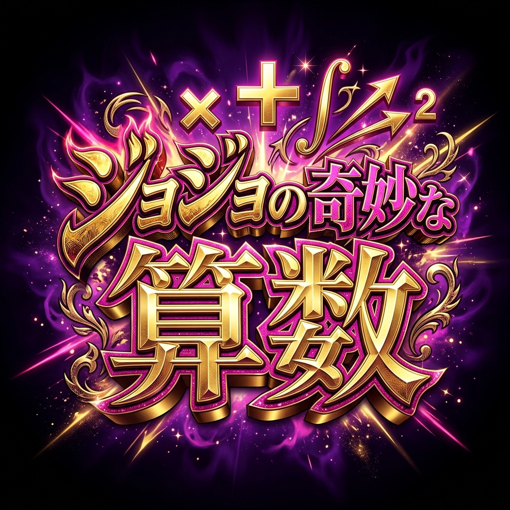

ゴゴゴゴ
ドドドド
ズキュウウウン

🎵 BGM ON
🔥 今日の全問正解:
0
回
「おまえは今まで食ったパンの枚数をおぼえているのか？」
練習を開始するッ！
ジョジョ図鑑を見る👀
ジョジョ図鑑
10問全問正解で新しいスタンド使いが解放されるぞッ！
戻る
承太郎
スタープラチナの本体。冷静沈着で無敵のスタンドを操る。
閉じる
1 / 10
12 + 8 = ?
オラオラ！
正解だッ！
▼ タップして次へ
最高に「ハイ！」ってやつだアアアアア！
10
/ 10 問正解
君の計算能力はスタアプラチナ級だッ！
もう一度挑むッ！
ジョジョ図鑑を見る👀
タイトルへ戻る